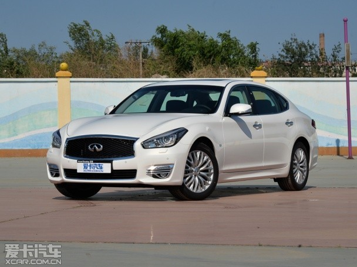
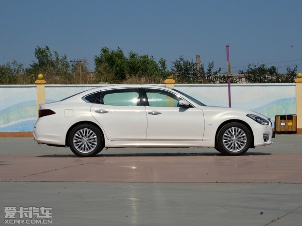
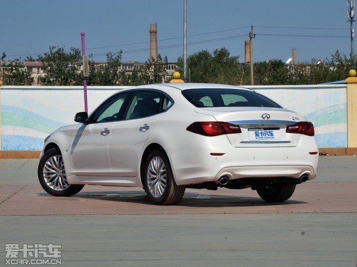
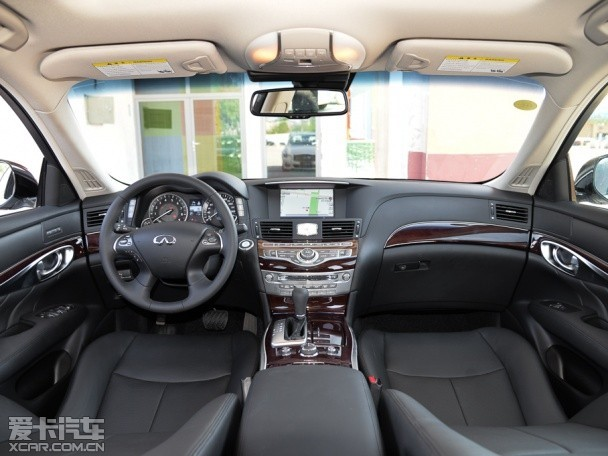
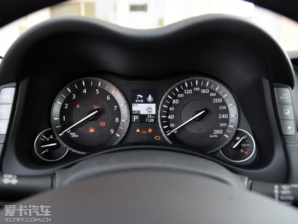
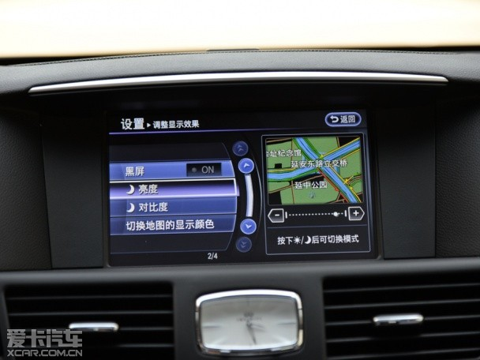
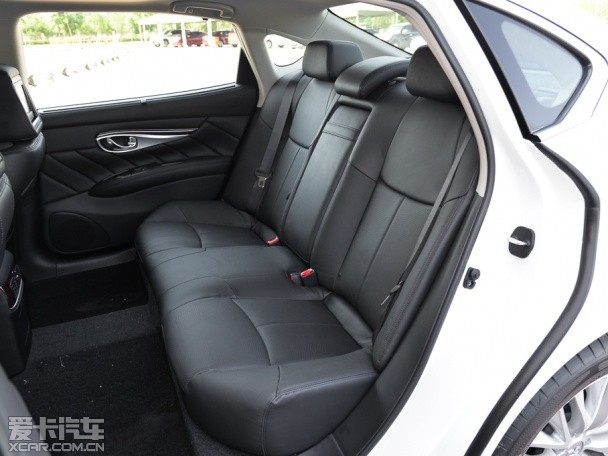
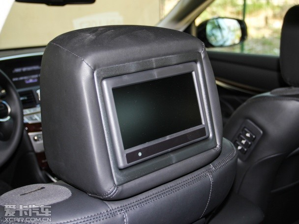
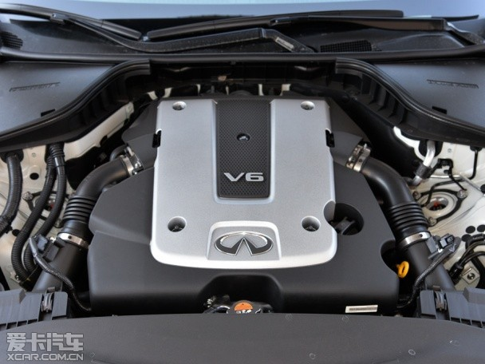
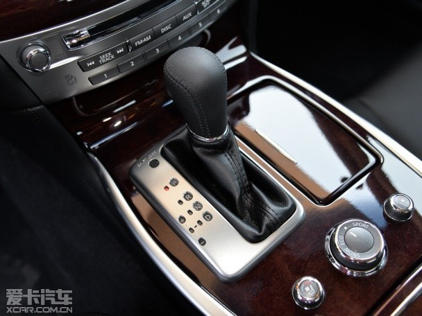

精选坐骑
2016-04-08
5月22日，英菲尼迪新款Q70L正式上市，新款车型在外观设计上有所变化，内饰和配置方面也进行了升级。有2.5L V6发动机和3.5L混合动力系统可选，共推出6款车型，售价区间为39.98万元-64.98万元，具体车型售价如下表所示：
外观方面，英菲尼迪Q70L顶配版新车的改变非常明显，较老款车型更加时尚动感，前脸保险杠下方的改动尤其明显，尾灯还镶嵌有明显的“Q70L”标识。新车外观设计更加鲜明与运动，整体风格向全新Q50靠拢。
 内饰设计以豪华和舒适为基调，座椅采用半苯胺真皮包裹，中央扶手及车门扶手处采用质感极为细腻的SOFILEZ材质，带来无与伦比的乘坐体验。采用独有的银粉涂装实木内饰，采用传统手工工艺，打造出银色渐变木纹光泽，高级感十足。新Q70L独有的森林空调系统，可显著降低车内PM2.5值，并释放树木和绿叶的清香，带来清新空气。
 此外，搭载同级唯一全系标配的电吸后车门和后备厢盖，为客户带来越级体验。可单独操作的后排娱乐系统、后排座椅电动倾斜功能和优化的中央扶手功能等，为后排提供更加尊贵的体验。
在安全配置方面，新Q70L也更加周全，新增全球首创的超视距前端碰撞预警系统（PFCW）以及倒车碰撞预防系统（BCI），可预先提示碰撞风险，将主动安全性提升至新高度。带移动物体监测功能的全景式监控影像系统（AVM），能提供360°无死角车身视野，有效提升低速行驶和泊车时的便捷和安全性。结合全速段智能巡航系统 (ICC)、车距控制辅助系统 (DCA)、车道偏离警告系统 (LDW) 及车道偏离修正系统 (LDP) 、盲区警示系统 (BSW) 及侧面碰撞修正系统 (BSI)等先进配置，为驾驶者提供全面贴心的行车保护。
 动力系统方面，新Q70L提供两种选择，搭载VQ25HR 2.5L V6自然吸气发动机，最大功率达到163kW；另外还有一款3.5升V6高性能混合动力系统，由VQ35HR V6自然吸气发动机和行业领先的单电机双离合器组成，以性能为导向，系统综合功率高达261kW，两款发动机都匹配7速手自一体变速箱，混合动力车型0-100km/h加速仅需5.1s，百公里油耗低至7.3L。
 由于出自于英菲尼迪家族FM前中置平台，新Q70L实现了接近50：50的均衡配重比，采用前双叉臂、后多连杆独立悬架，带来同级领先的驾控体验。该款车提供标准、环保、运动和雪地四种驾驶模式，充分满足消费者的多重需求。
英菲尼迪新Q70L享有整车4年/10万公里免费保修保养及24小时道路救援，混合动力系统则专享6年/15万公里免费延长保修服务。
编辑点评：英菲尼迪新款Q70L设计上采用了全新的家族式设计，配置上也有一定的调整，而最大的看点是，新款车型定价在老款基础上有所下调，性价比进一步提升，在时下豪华品牌大调价的背景下，这样的做法很有必要。
4123 254